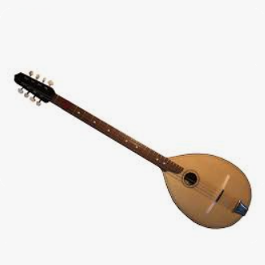

5 Uzrasto je zelen bor
Un pin vert a poussé
(Četrnaesta Rukovet - 14ème guirlande :06:13 - 08:20 )

|
|
 Version Mokranjac |
 Djevojka je zelen bor |
NOTES
|
[1] Балканска тамбура Песму „Дјевојка је зелен бор садила“ прати „тамбурашки“ оркестар . Овај инструмент, који се назива "тамбура" или „тамбурица“ је лаута којa ce срећe у Грчкој, Мађарској, Бугарској пa и у бившој Југославији, осим Словеније, y земљама које су вековима припадале византијском, а затим османском свету; Ево описа овог инструмента са Википедије: „Тамбура има дугачак врат са 12 до 18 прагова. Звучна кутија, направљена од платана, трешње, брескве, крушке или јавора, има облик крушке, а звучна плоча је у хармонији бора или смрче. Понекад се на столу налази звучна рупа, а понекад се још једна избуши у тело. Постоји неколико жица: од 2 до 12 жица груписаних у парове, али понекад и од 3 до 7 жица. Акорд је дијатонски или хроматски. Игра се плектрумом од коре трешње..." Слични инструменти са сличним називом налазе се широм света кинеске или турске културе: тамбур, тамбур, тамбур, танбур, танбура, тамбура, дамбура, танбураг, тампура, танпура, тампури, тамбурица, тонбул или тунбур, пандура, пандора, бандора , домбра... |
[1] Tambura des Balkans Le chant "Djevojka je zelen bor sadila" est accompagné par un orchestre de "tambura". Cet instrument, aussi appelé "tamburica" est un luth que l'on rencontre en Grèce, Hongrie, Bulgarie et dans l'ancienne Yougoslavie, sauf la Slovénie, pays qui appartinrent au monde byzantin puis ottoman pendant des siècles; Voici une description de cet instrument tirée de Wikipédia: "La tamboura est munie d'un long manche avec 12 à 18 frettes. Sa caisse de résonance, faite de sycomore, de cerisier, de pêcher, de poirier ou d'érable, a la forme d'une poire ; la table d'harmonie est en pin ou en épicéa. On trouve parfois une ouïe sur la table et parfois une autre est percée dans la caisse. Il existe plusieurs cordages : de 2 à 12 cordes regroupées en paires, mais parfois aussi 3 à 7 cordes. L'accord est soit diatonique, soit chromatique. Elle se joue avec un plectre en écorce de cerisier..." On rencontre des instruments similaires avec un nom semblable dans tout le monde de culture chinoise ou turque: tambûr, tambur, tamboor, tanbur, tanbura, tamboura, dambura, tanburag, tampura, tanpura, tampuri, tamburitza, tonbul ou tunbûr, pandura, pandore, bandora, dombra... |